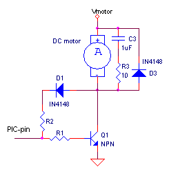
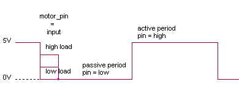
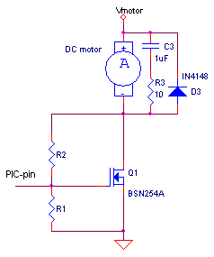
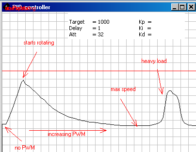
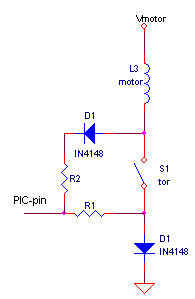
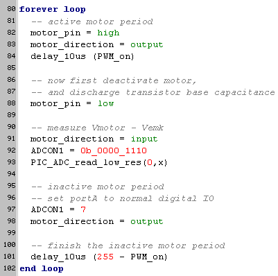
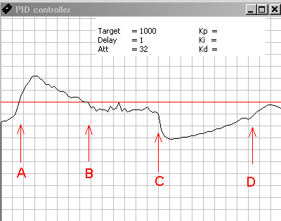
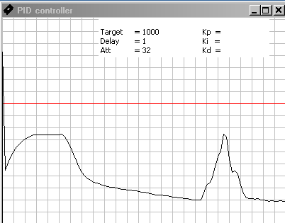
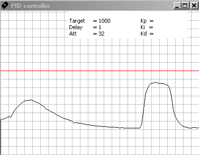
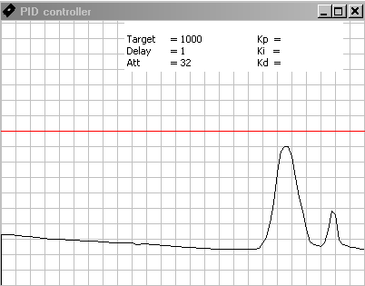

february 2005
1-pin Motor Control
Introduction
Is it possible to control a DC-motor (through PWM) and detect if it's loaded too heavy, with just one digital PIC pin ?
Or even, can we control a DC-motor (through PWM) and detect it's speed, with just one analog PIC-pin ?
Both questions can be answered by "yes", and yield for all kind of DC-motors, whether brushless or with commutator.
And the nice thing is, that only 2 extra components are needed, 1 resistor and 1 diode, in the circuit below R2 and D1. It's also possible to add a zener in series with D1 (D1 is always needed!) and R2, which has an advantage of making the circuit more sensible.
 
The idea of the circuit is, that just after switching the motor current off, the PIC-pin is set momentary to input, so the generated EMK from the motor can be measured through D1, R1 and R2. After the EMK is measured, the PIC-pin is set to active low, so normal PWM is continued.
D3 is the normal flyback diode, needed for inductive loads. R3 and C3 forms a snubber network (quiet heavy here for such a small motor), to reduce high frequency noise. R3 and C3 are not strictly necessary, but if they are used, they should be placed as close to the motor as possible (sometimes they are already buildin). The snubber network doesn't effect the results shown here.
Martin Dare suggested the following circuit with a FET (which I didn't try yet)

First Recording
Let's first take a look at a recording. Here I used a 16F876, pin A0, a 6V low power motor (motor-1) and increased the PWM form 0% to 100%, R1=500, R2=1k, no snubber network. The recording was made with the JALcc boot-uploader. The testprogram was written in JAL, 8 bits AD-conversion, 64 values where added and divided by 8, so the effective resolution was 11 bits.

horizontal axis is about 0.6 seconds / division
vertical axis is 100 AD-values / division (the red horizontal line = 1000 AD
If we forget for a moment the first part of the graph, where the motor is not running, we get what we expected. Increasing PWM, gives increasing speed, gives increasing EMK, gives decreasing voltage on the PIC-pin. I cann't say anything about the linearity, but the reproducability is quiet good. At the right of the graph, the motor (running at 100% PWM) was heavily loaded and it's speed was almost reduced to zero.
When the motor is not running
Now back to the first part of the graph, on the left (where the motor isn't rotating yet). Because the motor isn't rotating, there cann't be any generated EMK. We here see a voltage linear correlated with the amount of energy we put into the coil. So what we measure must be the current through the coil, which will persist, after the transitor is switched off. So this leads to the following equivalent circuit.

Because we don't know anything about the inductance, we can not predict the exact behaviour. Below is also a recording of motor-2, which even saturates (possible due to the large mass it had to accelarate), before starting to rotate. At first sight, this gives rise to a problem, because we now have to possible conclusions from a specific measured value, either we measure the energy stored in the coil or we measure the EMK = speed (maybe with the coil energy superimposed ?). But by defining a minimum PWM value for the motor, this problem can be bypassed. Another way to bypass this problem, is to change the PWM a little bit and detect the sign of the slope.
Component Values
To get the highest resolution, realizing that the EMK is divided by R1/(R1+R2), we want a high value for R1 and a small value for R2. On the other hand we want a small value for R1, to limit the power in Q1 (fast switching).
The smallest value for R2 is on one hand determined by the ratio of the motor voltage Vmotor and the powersupply of the PIC Vpic.
Vmotor * R1 / (R1+R2) < Vpic
or
R2 > R1 * (Vmotor - Vpic) / Vpic
And on the other hand, R2 may not draw any significant current from the motor during the PWM off-state.
Good values for R1 and R2 are in the range of 500 ... 2000 Ohm. The minimum value for R1 is about 200 Ohm.
Another option is to use an extra zener diode in series with R2 and D1 (D1 is still needed !!). The advantage is that the motor feedback is less reduced by the R1 / R2 ratio.
The program
Below is shown the essential part of the program. Averaging and RS232 communication is left out.

Heavy load detection with digital IO
This is very well possible. Using a port with smitt-trigger works much better then ports without (like pins that can be used as analog inputs). A software smitt-trigger won't give the same results and in general will give a high processor load.
|
Input |
normal (e.g. A0) |
Smitt-trigger (e.g. C2) |
|
Low Level |
0.8V (spec D030) |
1V (spec D031) |
|
High Level |
2V (spec D040) |
4V (spec D041) |
Half and full bridge
No time to evaluate now. Is also less interesting, because it will only save 33% of the pins (while single direction will save 50% of the pins).
Maintaing speed by feedback
With a very clumsy software feedback loop, the following recording was made. The intial speed is set just below the red line. Although this is far from optimal control, it shows that feedback is very well possible.
As I'm working right now on a general purpose PID controller in JAL (you may have noticed the textbox in the graphs ;-), maybe this paragraph will be extended in the future.

point A, the motor is loaded and it's speed decreases
point B, the motor is still loaded with load applied at pointA, but PWM modulation has increased the torque, so the speed is again at setpoint.
point C, the load is removed from the motor, so speed increases very rapidly due to the high PWM ratio that will slowly reduce
point D, motor is unloaded and at the setpoint again.
Other interesting links
Roman Black has published a method to record speed form a brush/commutator DC motor.
Simple encoder-less encoder for speed control small DC motor
Some other recodings
motor-1, 6V zonnecel motor, free running at 5V, 25 mA, on heavy load 150 .. 200 mA

motor-2, high torque motor, with a 150:1 reduction box.
Notice the saturation at the left of the graph, where the motor is not running

motor1, with sampling 100 us after motor-pin is placed in input mode,
less power form the persisting current through the coil, more EMK ??

motor-1, with sampling and the end of the off-period
no more energy from the persisting current through the coil, only EMK ??